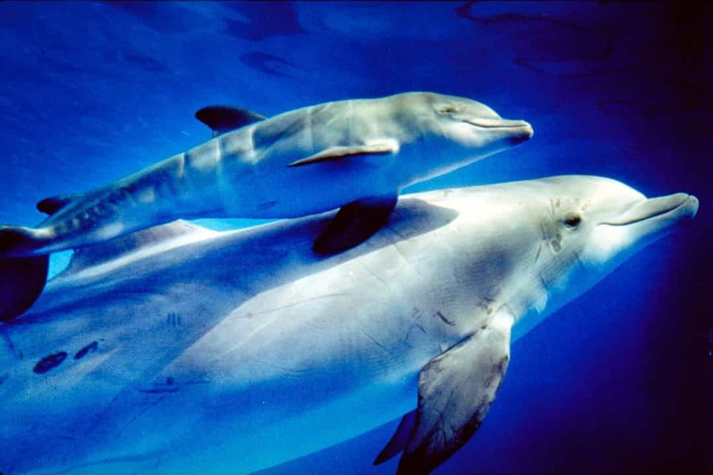

Biển Xanh là nơi chia sẻ kiến thức và hình ảnh về thế giới biển cả. Chúng tôi mong muốn mang lại cảm hứng bảo tồn đại dương cho cộng đồng.
Nếu bạn có tư liệu hay hình ảnh thú vị, hãy đóng góp để trang ngày càng phong phú hơn.
Sứ mệnh của chúng tôi
Chúng tôi cam kết lan tỏa thông tin chính xác về hệ sinh thái biển, nâng cao nhận thức về tầm quan trọng của từng loài sinh vật và vai trò của biển đối với cuộc sống con người.
Tầm nhìn
Trở thành nền tảng hàng đầu Việt Nam về giáo dục và bảo tồn đại dương, kết nối chuyên gia, nhà nghiên cứu và những người yêu biển.
Giá trị cốt lõi
- Chính xác: Nội dung luôn được kiểm chứng và cập nhật.
- Cộng đồng: Tôn trọng đóng góp, xây dựng không gian trao đổi cởi mở.
- Bền vững: Hướng đến mục tiêu bảo tồn và phát triển lâu dài cho đại dương.
Đội ngũ của chúng tôi
Biển Xanh hội tụ các chuyên gia hải dương học, nhiếp ảnh gia, và nhà bảo tồn đến từ nhiều tổ chức uy tín. Chúng tôi luôn sẵn sàng chia sẻ kiến thức và kinh nghiệm thực tế.
Tham gia với chúng tôi
Hãy trở thành một phần của Biển Xanh: viết bài, chia sẻ hình ảnh, hoặc tham gia các sự kiện offline để bảo vệ đại dương.